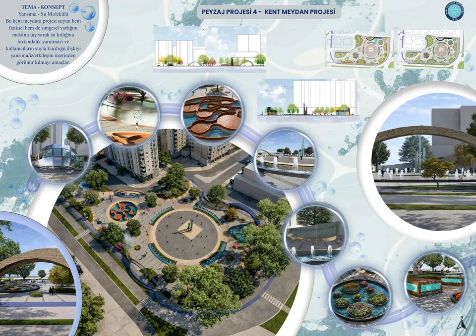
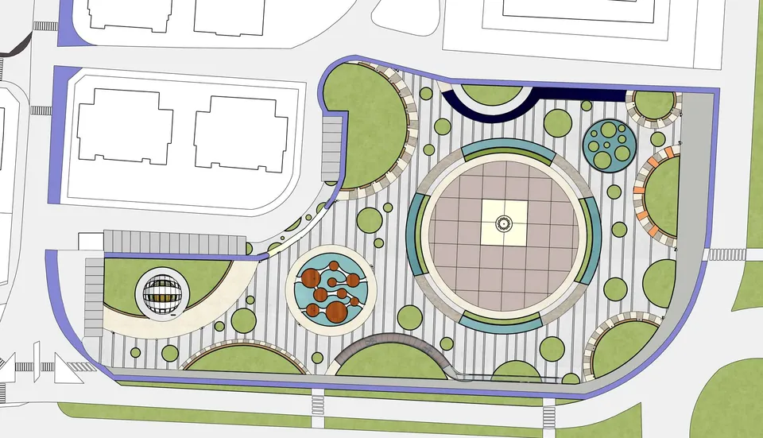
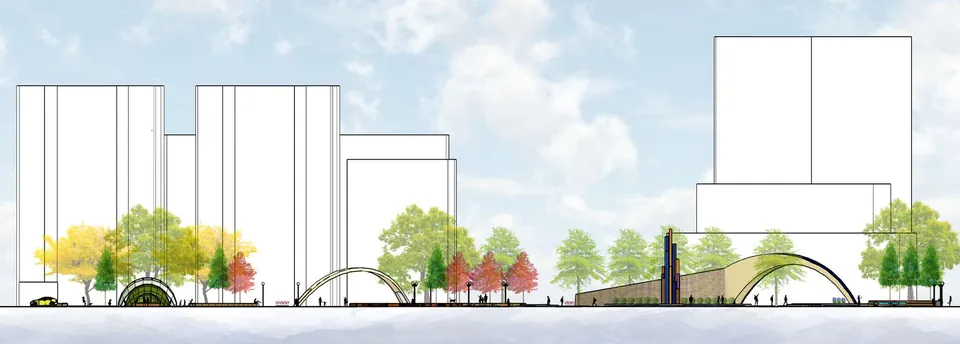
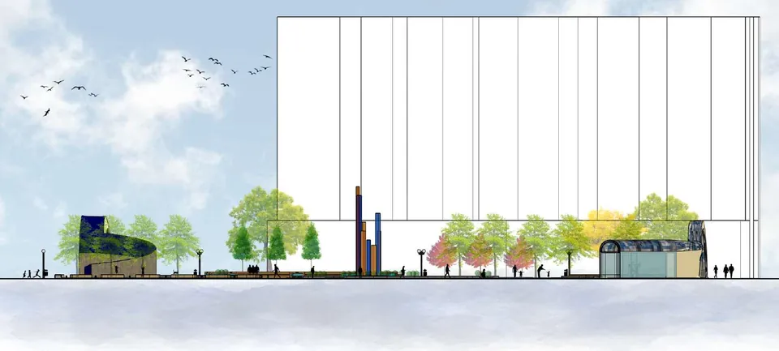
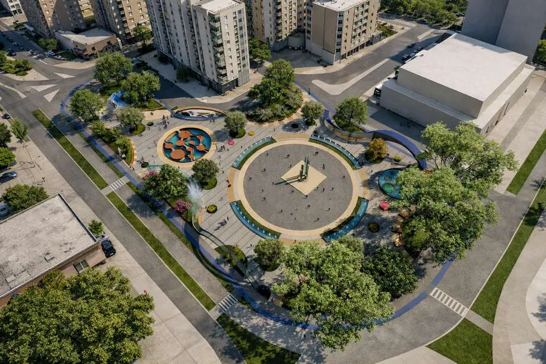
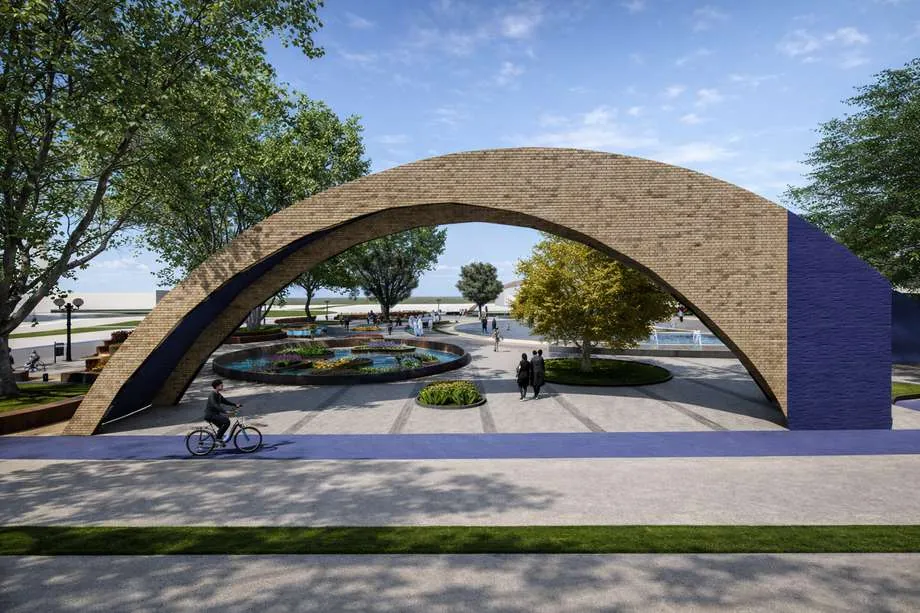
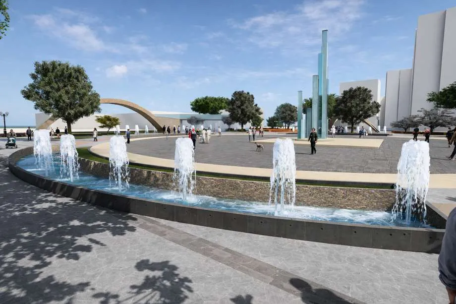

01 / Public SpaceKamusal Alan
Urban SquareKent Meydanı
A public landscape shaped around reflection, interaction and urban experience.Yansıma, etkileşim ve kentsel deneyim üzerinden kurgulanan kamusal peyzaj.

TypeTürPublic SpaceKamusal Alan
ContextBağlamÖzlüce 29 Ekim, Nilüfer, BursaÖzlüce 29 Ekim, Nilüfer, Bursa
FocusOdakPublic realm · spatial experience · planting · visualizationKamusal alan · mekânsal deneyim · bitkisel tasarım · görselleştirme
Project storyProje hikâyesi
The project reimagines an underused site in front of BKM as a public square. Its spatial language uses reflection as a concept to create a visually rich, experiential landscape where users actively engage with the place.Proje, BKM önündeki aktif kullanılmayan alanı kamusal bir meydan olarak yeniden ele almaktadır. Yansıma kavramı üzerinden geliştirilen mekânsal dil, kullanıcıların alanla aktif biçimde etkileşime geçtiği görsel ve deneyimsel açıdan zengin bir peyzaj kurgusu oluşturur.
Drawings + visualsÇizimler + görseller
Explore the workÇalışmayı incele
Open any image to inspect the plan, model, render or presentation board at a larger scale.Plan, maket, render veya sunum paftasını daha büyük ölçekte incelemek için herhangi bir görseli aç.







